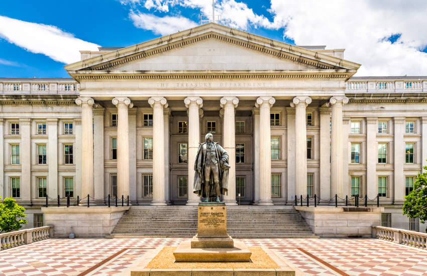

09 Ledger Insights 보도일 2026.10.01
미 재무부, 주별 스테이블코인 인증 절차 공개

미국 스테이블코인 제도는 법 제정 뒤 세부 규칙을 순서대로 채우고 있다. 이번에는 주 규제당국이 연방과 비슷한 체계라고 인정받을 때 쓰는 절차가 먼저 나왔다. 다만 심사의 핵심 잣대는 아직 확정되지 않았다.
무슨 일이 있었나
미 재무부는 주별 스테이블코인Stablecoin — 법정통화나 자산 가치에 맞춰 가격 안정을 목표로 하는 디지털 자산 제도를 연방 기준Federal framework — 미국 연방 차원의 스테이블코인 규칙 묶음과 실질적으로 비슷한지 심사하는 중간 절차 규칙을 공개했다. 이 규칙은 주 규제당국이 제출할 신청 서식과 검토 단계를 정한다.
규칙은 Stablecoin Certification Review Committee 명의로 나왔다. 이 위원회는 재무장관, 연방준비제도 의장, 연방예금보험공사 의장으로 구성된다. 규칙은 9월 30일 발효했다. 다만 서류 승인 절차가 끝나기 전에는 인증Certification — 감독당국이 다른 제도가 기준에 맞는지 공식 확인하는 절차 신청을 받지 않는다.
- 적용 대상: 주 규제당국의 스테이블코인 감독 체계Regime — 발행·준비자산·공시·감독을 묶은 규제 틀
- 이번 공개 내용: 신청 서식과 검토 절차
- 발효 시점: 9월 30일
- 접수 개시: 서류 승인 절차 완료 후
왜 지금 나왔나
이번 규칙은 더 큰 쟁점인 '실질적 유사성Substantial similarity — 다른 제도가 핵심 요구를 사실상 같은 수준으로 충족하는지 보는 기준' 기준 규칙의 짝이 되는 절차 규칙이다. 재무부는 그 기준 규칙을 4월에 제안했다. 주 규제당국은 그 제안에 반발했다. 핵심 기준 규칙은 아직 제안 단계에 머문다.
규칙의 내용과 적용 범위
이번 중간 규칙은 무엇을 제출하고 어떤 순서로 심사하는지를 정한다. 연방 기준과 어느 수준까지 같아야 하는지는 이번 규칙에 확정되지 않았다.
GENIUS Act는 법 시행일로부터 1년 안에 주 정부가 첫 인증을 제출하도록 요구한다. 법의 효력 발생일은 2028년 1월 18일이다. 주 규제당국은 연방 감독기관들조차 자체 GENIUS Act 규칙을 아직 확정하지 않아, 현실적으로 맞추기 어려울 수 있다고 우려해 왔다.
국내와의 접점
원문은 국내 적용에 대해 언급하지 않았다.
우리 업무로 옮기면
해외 스테이블코인 연계 서비스를 검토하는 팀은 '법이 생겼다'와 '실제 접수 절차가 열린다'를 구분해 일정표를 다시 짤 필요가 있다. 상품기획과 컴플라이언스 팀은 발행사 후보가 어느 주 감독 체계를 택하는지, 그 체계가 연방과 동등 인증을 받았는지 확인 항목에 넣어야 한다.
대외계 연계와 수탁 시스템은 발행사 온보딩 문서에 감독 체계 식별값을 받을지 검토할 만하다. 리스크 관리 쪽은 핵심 기준 규칙이 아직 제안 단계라는 점을 전제로 예외 처리와 계약 문구를 점검하는 편이 낫다. 일정 의존성이 큰 사업은 인증 접수 개시 시점을 원문만으로 확정할 수 없다는 점도 같이 봐야 한다.
원문 정보
제목: Treasury publishes state stablecoin certification procedures under the GENIUS Act
보도일: 2026.10.01